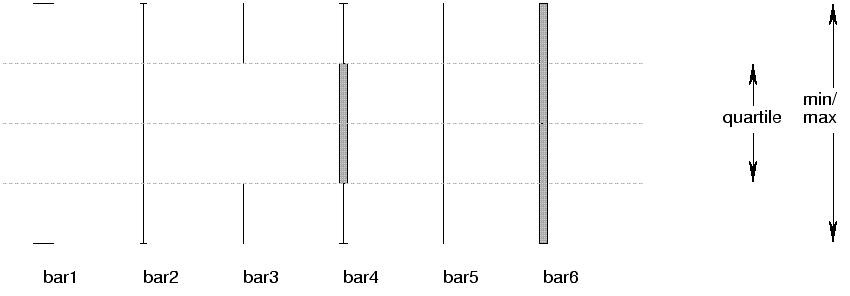

| PyChart |
| PyChart |
error_bar.T is an abstract base class. Actual drawing is
done by its subclasses, described next.

Length of the horizontal bars
The style of the horizontal bars.
The length of the horizontal bars
The style of the vertical bar.
| PyChart |